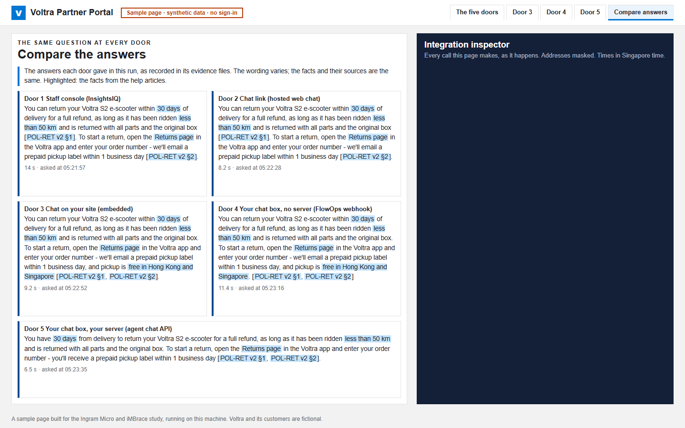

Staff console
Help staff in their workspace
Signed-in staff ask the assistant in InsightsIQ, iMBrace's chat and analysis screen.
You operate: the assistant in iMBrace.
iMBrace for partners
Chapter · Reaching users
Use the staff console, share a chat link, or bring the assistant into your website. This demo shows five routes to the same answers.
For: partners planning staff assistants, customer chat or a portal integration.
One assistant, five routes

The wording changed slightly, but each route used the same assistant, help articles and order-lookup rules.
A partner can choose the screen that suits the user while reusing the assistant’s help articles and order checks.
Watch the five front doorsChoose the experience
Staff console
Signed-in staff ask the assistant in InsightsIQ, iMBrace's chat and analysis screen.
You operate: the assistant in iMBrace.
Hosted chat
Customers open iMBrace's hosted chat and ask their question.
You operate: the assistant and its chat configuration.
Embedded chat
The hosted chat sits inside your page, beside the information your customers came to find.
You operate: your website and the embedded chat.
Prototype portal
A controlled prototype connects your chat box to FlowOps, iMBrace's workflow builder.
You operate: the prototype page and its workflow.
Your server
Your server connects the portal to the assistant. The demo keeps the iMBrace key on that server.
You operate: the portal, server and user access.
Supporting detail